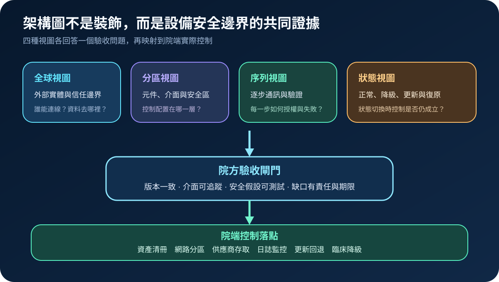
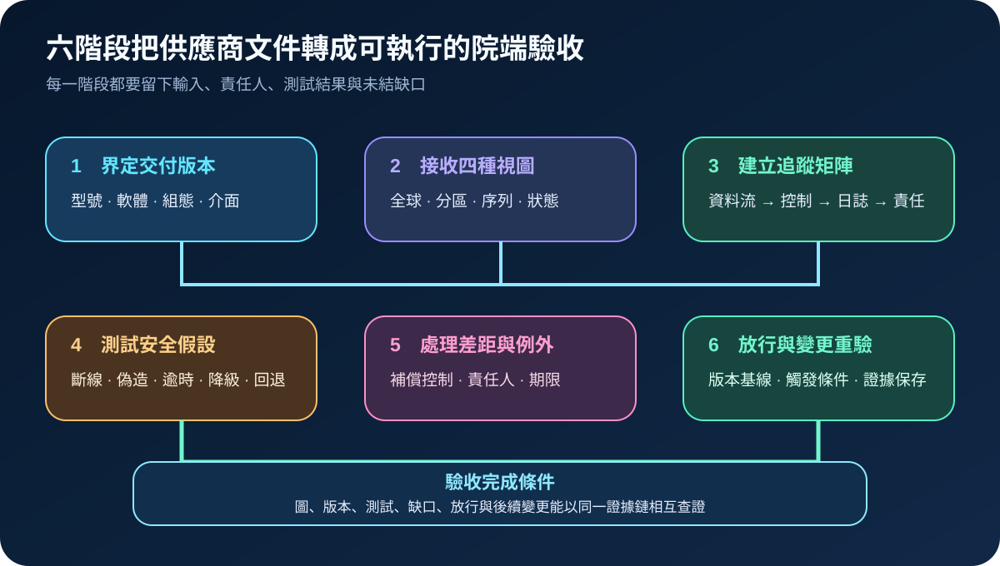
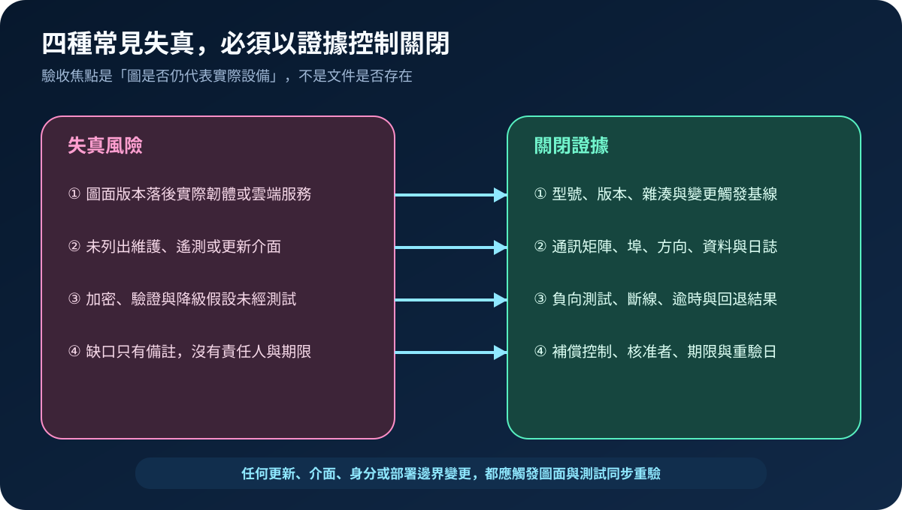

醫療資安國際觀察 · 2026-11-09
醫療設備安全架構圖如何成為院端驗收證據：從四種視圖到逐條通訊追蹤
作者：Dr. William｜醫療資訊與資安治理實務工作者
醫療設備的安全架構圖若不能對應實際版本、介面、信任邊界與失敗狀態，就無法支援網路分區、監控、事件應變或安全更新；院端驗收必須把圖面轉成可測試、可追蹤、可重驗的證據。
名詞解釋：四種架構視圖與追蹤矩陣
全球視圖描述外部實體、資料流與信任邊界；分區視圖展開設備元件、介面與安全區；序列視圖逐步呈現通訊、驗證、錯誤與回應；狀態視圖說明正常、降級、更新、回退與復原。追蹤矩陣則把每條通訊連到協定、身分、加密、日誌、控制責任與測試結果。
國際現況與適用邊界
美國 FDA 於 2026 年 2 月發布的最終指引，要求製造商以全球、分區及序列等架構視圖說明安全邊界、資料流與逐步通訊，並將網路安全風險管理納入品質系統。ENISA 2026 醫療資安採購指引則把採購前風險評估、供應商選擇、契約要求、驗收、監控及安全退場串成生命週期。NIST 的醫療設備實作指南示範如何以網路分段、身分、日誌與異常偵測保護院內設備。這些文件分別屬美國產品監管、歐盟政策建議與美國技術實作參考，不是台灣醫院的法定驗收條文。
台灣適用原則：可將國際資料轉成採購附件、導入測試與變更重驗條件；實際責任仍須依台灣醫療器材規範、資安與個資制度、院內醫工及臨床程序、許可證與契約界定。
規劃：先定義交付包與共同責任
交付範圍至少包含型號、軟體與韌體版本、部署模式、雲端依賴、介面清單、資料分類、預設連線、維護路徑、日誌能力、更新與回退。製造商負責產品架構與安全假設；院方由醫工、資訊、資安、採購、臨床及醫療品質共同確認場域差異。指標可包含介面追蹤覆蓋率、架構與資產版本一致率、負向測試通過率、未結缺口逾期率及變更重驗完成率。
實作：六階段形成可放行的證據鏈
- 界定版本：鎖定型號、軟體、組態、部署與介面。
- 接收視圖：確認四種視圖標示外部實體、信任邊界、資料流及狀態。
- 建立矩陣：逐條記錄來源、目的、協定、埠、身分、加密、日誌與責任。
- 測試假設：驗證未授權連線、憑證錯誤、斷線、逾時、更新失敗、降級與回退。
- 關閉差距：以修正或補償控制處理缺口，指定責任人、期限與重驗條件。
- 放行重驗：保存基線；韌體、雲端、介面、身分或部署邊界改變時重新驗收。

風險：圖面存在，不代表現況可信
常見失敗包括圖面落後韌體或雲端版本、遺漏維護與遙測介面、只驗正常流程，以及缺口沒有期限。控制重點是版本基線、逐條通訊追蹤、負向測試、補償控制與變更觸發；若無法取得完整架構，可先限制外部連線與供應商權限、強化分區與日誌，再以退場時程處理不可驗證風險。

可執行清單
- 架構圖是否標示對應型號、軟體、韌體、雲端與日期？
- 外部實體、維護路徑、遙測、更新與資料輸出是否完整列出？
- 每條通訊能否追到身分、加密、日誌、控制與負責角色？
- 是否測試未授權、逾時、斷線、更新失敗、降級與回退？
- 差距是否具補償控制、風險核准、期限及重驗條件？
- 變更管理是否會同步更新圖面、矩陣、測試與院端資產紀錄？
來源
- U.S. FDA｜Cybersecurity in Medical Devices: Quality Management System Considerations and Content of Premarket Submissions（最終指引：2026-02-03；查閱：2026-11-09）
- ENISA｜Good Practices for the Security of Healthcare Services（發布：2026-08-25；查閱：2026-11-09）
- NIST｜SP 1800-8: Securing Wireless Infusion Pumps in Healthcare Delivery Organizations（發布：2018-08；查閱：2026-11-09）
內容說明
本文依健康台灣深耕計畫相關治理內容整理，並參考 FDA、ENISA 與 NIST 官方資料，說明醫療設備安全架構、逐條通訊追蹤、負向測試與變更重驗；不把美國或歐盟要求視為台灣醫療機構的法定義務，也不取代主管機關規範、產品風險評估、臨床判斷、契約審查或法律意見。